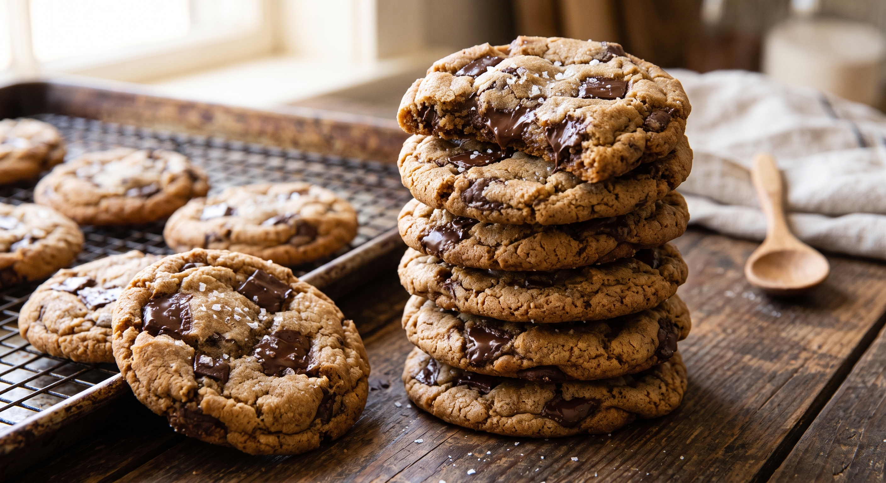

Home
Chewy Chocolate Chip Cookies

The Ultimate Crow-Pleaser!
Crispy around the edges, soft and chewy in the center, and loaded with rich chocolate chunks, these classic chocolate chip cookies are everything a homemade treat should be. Finished with a light sprinkle of flaky sea salt, they’re guaranteed to be your new go-to cookie recipe!
Ingredients for 12 cookies
- ½ cup granulated sugar
- ¾ cup brown sugar, packed
- 1 teaspoon salt
- ½ cup unsalted butter, melted
- 1 large egg
- 1 teaspoon vanilla extract
- 1 ¼ cups all-purpose flour
- ½ teaspoon baking soda
- 4 oz milk or semi-sweet chocolate chunks
- 4 oz dark chocolate chunk, or your preference
Steps
- In a large bowl, whisk together the sugars, salt, and butter until a paste forms with no lumps.
- Whisk in the egg and vanilla, beating until light ribbons fall off the whisk and remain for a short while before falling back into the mixture.
- Sift in the flour and baking soda, then fold the mixture with a spatula (Be careful not to overmix, which would cause the gluten in the flour to toughen resulting in cakier cookies).
- Fold in the chocolate chunks, then chill the dough for at least 30 minutes. For a more intense toffee-like flavor and deeper color, chill the dough overnight. The longer the dough rests, the more complex its flavor will be.
- Preheat oven to 350°F (180°C). Line a baking sheet with parchment paper.
- Scoop the dough with an ice-cream scoop onto a parchment paper-lined baking sheet, leaving at least 4 inches (10 cm) of space between cookies and 2 inches (5 cm) of space from the edges of the pan so that the cookies can spread evenly.
- Bake for 12-15 minutes, until the edges have started to barely brown.
- Cool completely before serving.
- Enjoy!